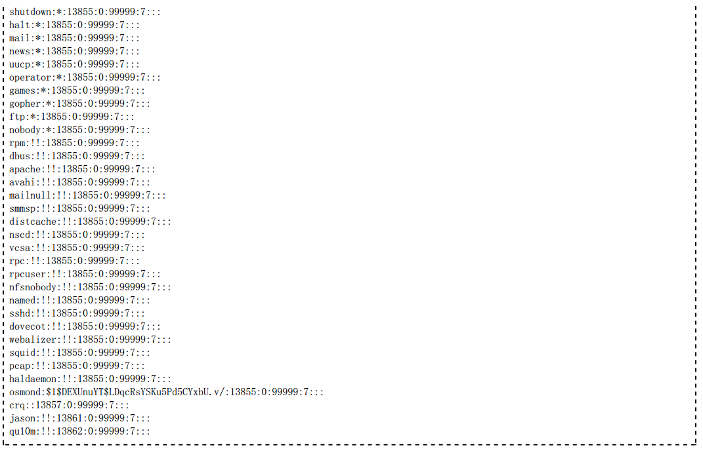

Linux下的账户系统文件主要有
1、用户信息文件：/etc/passwd
2、用户密码文件：/etc/shadow
3、用户组文件：/etc/group
4、用户组密码文件：/etc/gshadow
6、新用户信息文件：/etc/skel
7、用户登录欢迎信息文件：/etc/motd、/etc/issue
/etc/shadow文件是/etc/passwd 的影子文件，这个文件并不由/etc/passwd 而产生的，这两个文件是应该是对应互补的； shadow内容包括用户及被加密的密码以及其它/etc/passwd 不能包括的信息，比如用户的有效期限等；这个文件只有root权限可以读取和操作.
/etc/passwd文件对任何用户均可读，为了增加系统的安全性，用户的口令通常用shadow passwords保护。/etc /shadow只对root用户可读。在安装系统时，会询问用户是否启用shadow passwords功能。在安装好系统后也可 以用pwconv命令和pwunconv命令来启动或取消shadow passwords的保护。
目前主流Linux系统 默认都使用shadow passwords保护。经过shadow passwords保护的账户口令和相关设置信息保存在 /etc/shadow文件里。shadow文件的内容形式如下：
其中各字段的意义如表所示。
这里需要注意第二个字段的不同内容所代表的含义
1、内容’!’ 表示这个账号不能用来登录
2、内容为’*’ 表示这个账号不能用来登录
3、内容为 ‘!$’开头的一段hash表示 账户被锁定
4、内容为 ‘!!’ 表示这个账号目前没有密码，也不能用来登录
通过观察shadow文件第二个字段的内容，我们可以判断系统的加密类型
如果以$1开头的hash 表示MD5密码
如果以$5开头的表示 SHA-256加密
如果以$6开头的表示 SHA-512加密
如果以$2开头的表示 blowfish加密
将用户分组是Linux中对用户进行管理及控制访问权限的一种手段。每个用户都属于某一个组；一个组中可以有多个用 户，一个用户也可以属于不同的组。当一个用户同时是多个组的成员时，在/etc/passwd文件中记录的是用户所属的主 组，也就是登录时所属的默认组，而其他组称为附加组。用户要访问附加组的文件时，必须首先使用newgrp命令使自 己成为所要访问的组的成员。组的所有属性都存放在/etc/group文件中。/etc/group文件对任何用户均可读。下面是 一个/etc/group文件的例子：
和/etc/passwd文件类似，其中每一行记录了一个组的信息。每行包括四个字段，不同字段之间用冒号隔开。其中各字 段的内容说明见下表。
/etc/gshadow文件用于定义用户组口令、组管理员等信息，该文件只有root用户可以读取。下面是一个/etc /gshadow文件的例子：
和/etc/group文件类似，其中每一行记录了一个组的信息。每行包括四个字段，不同字段之间用冒号隔开。其中各字段 的内容说明见下表。